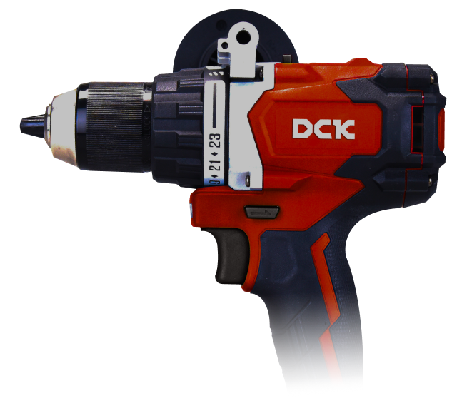

<section id="about" class="about">
    <div class="about__container container">
        <p class="about__header">
            <span class="about__name about__name_big">DCK</span> 
            высококачественные электроинструменты и оборудование, соответствующие самым высоким отраслевым стандартам производства
        </p>
        <div class="about__row">
            <div class="about__info">
                <p class="about__paragraph">
                    <span class="about__name">DCK</span> 
                    <span class="about__text">- высококачественные электроинструменты и оборудование, соответствующие самым высоким отраслевым стандартам производства: DCK проходит тщательный контроль качества для обеспечения максимальной производительности.</span>
                </p>
                <p class="about__paragraph">
                    <span class="about__name">DCK</span> 
                    <span class="about__text">- нацелен обеспечить каждого профессионального пользователя инструментами и оборудованием, не уступающими по качеству и производительности инструментам известных мировых брендов.</span>
                </p>
                <p class="about__paragraph">
                    <span class="about__name">DCK</span> 
                    <span class="about__text">- широко представлен в таких странах как  Германия, США, Мексика, Вьетнам, Саудовская Аравия, Пакистан, Южная Корея, Индия, Кампучия, Индонезия, Бангладеш, Колумбия, Таиланд, Мьянма, Марокко, Турция, Казахстан.</span>
                </p>
                <span class="about__subtitle">Сегодня DCK доступен и для российских профессионалов.</span>
            </div>
            
        </div>
    </div>
    
</section>